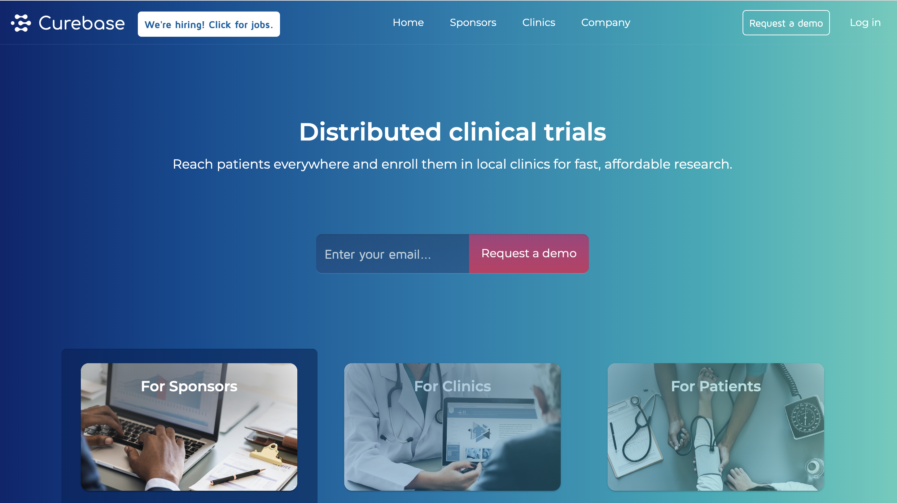
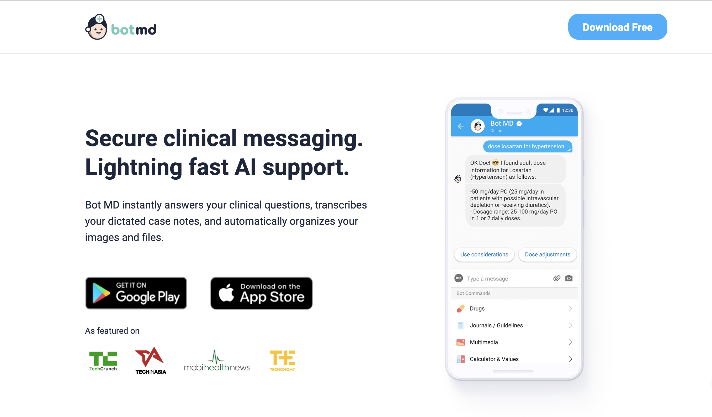
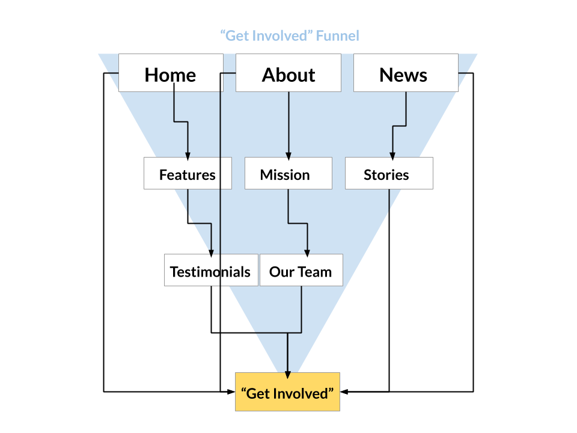
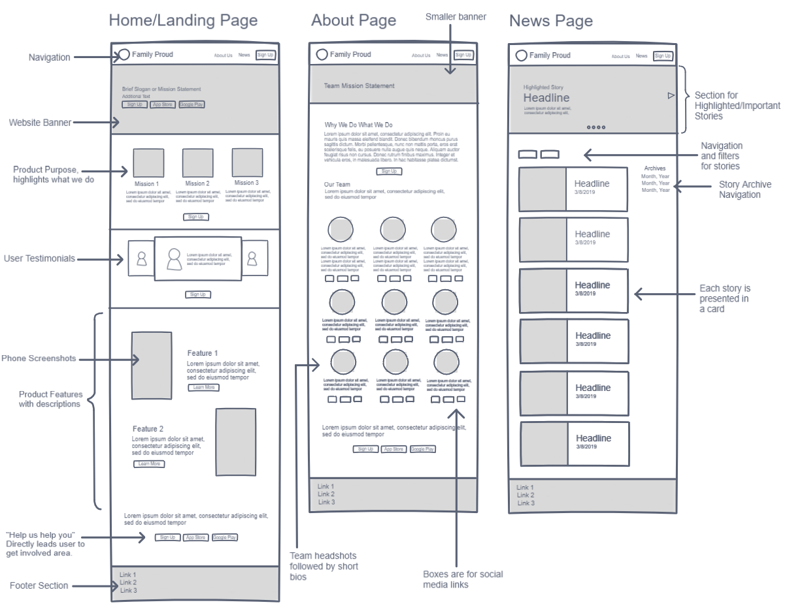
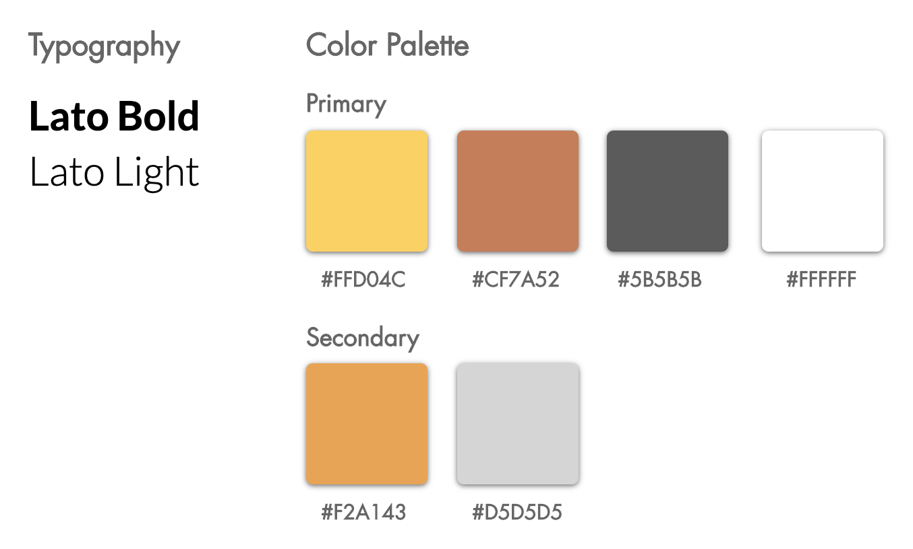
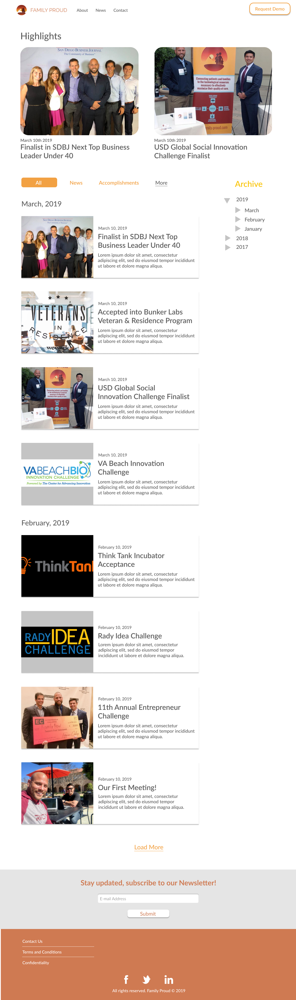

Family Proud
Connecting patients and families to the services they need
Role
Product Design/Web Intern
Team
Yoshua Wiltantra & others at Family Proud Inc.
Tools
Figma, Invision Freehand, Photoshop
Timeline
Winter, Spring 2019
Overview
Family Proud is a San Diego based tech startup founded in 2018 with the goal of creating a cross-platform tool to help patients, their families, and their supporters to find services and resources they need. Upon launch on both mobile and the web, Family Proud will allow users to become a part of a patient-support communication network, request specific services through a care registry, and to easily find and access resources to help alleviate the burden of care. At the center of Family Proud's mission is the pledge to ensure that no one is to face adversity alone. Currently, Family Proud is on track to launch a live product and is working with local strategic partners and organizations.
My Role
In January 2019, I joined Family Proud's team as a product design intern. Along with my team member Yoshua, I was assigned to redesign their website in order to prepare the company for their fundraising campaign and attracting the first users.
*Note: Due to a non-disclosure agreement, some parts of this project have been left out of this case-study.*

Our Process
Research - Ideation - Design
Research
Design Task
When Yoshua and I joined the team at Family Proud, the company had an archaic website made using an online template. Aside from the fact that it was hastily created, its main issue was that it was difficult to navigate and more importantly, portrayed little information to what Family Proud is about and what they do. The common concensus amongst the rest of the startup was that it was also dark, moody, and in general did not live up to the warm-feelings we wanted to produce.
Knowing what currently doesn't work, we along with members of marketing brainstormed several expectations we want the new website to have. These include:
- Enabling users to quickly and easily understand the mission of Family Proud
- Enabling users to quickly and easily see the features our final product would provide
- Enabling users to quickly and easily get involved with Family Proud
- Enabling a feeling of warmth, security, and comfort for users
All in all, we wanted to answer:
"How can we effectively showcase the purpose and features of Family Proud and attract potential users?"
Competitor Research
Because Family Proud was still in the midst of development, we did not have any user base to conduct research on to identify pain points or to gather insights on how the website can be improved. As a result and in typical startup fashion, we conducted a series of competitor analysis.


We aimed to look for any patters of layout, organization, information architecture, or marketing techniques that may give us a starting point in our design.
Observations
From our analysis, we observed that many websites utilized techniques such as large banners, conspicuous "get involved" buttons and links, taglines, etc. In terms of user flow, information presented in many sites would eventually lead to the user finding a "get involved button". After a series of discussions with marketing and leadership, we determined that this type of funnel system would become the basis of the website's information architecture.
Personas
As an additional effort to help prepare us in starting the design, we prepared quick user-personas: one for a potential user of Family Proud and one for a potential stakeholder.
Ideation
Getting Users Involved
From what we deduced in our research phase, we created a framework for our website with intentions to "funnel" users towards a "Get Involved" action. We aimed to have individual sections as well as the succession of sections to eventually lead to a "Get Involved" action.

Sketching & Wireframing
With a good idea of where we want to head and our priorities set, I began sketching low-fidelity wireframes in Invision-Freehand.

Design
Visual Design
After taking feedback from other team members and other departments and getting the "green-light" we finally moved on to Figma to begin producing a high-fidelity mockup of the website.
To produce the feeling of warmth, security, and comfort that is integral to company branding in the website, we ended up choosing a yellow-orange hue layed on top of a white background and an orange-brown as a secondary color to become the main color palette. We beleived warm colors such as orange and brown suggest feelings of warmth whereas brighter colors like yellow and white conveys a modern and minimalist look that a tech company like Family Proud represents.
In terms of typography, "Lato" was chosen above other sans-serif fonts for its contemporary look which at the same time felt friendly and welcoming.

Design System
Because Family Proud was just a budding company, we took the opportunity of designing the website as a chance to define the product's preliminary design system. This included choosing the above mentioned colors, typography, and combining them to create buttons, card displays, icons, etc. Some of these attributes rolled over to the Family Proud App which was developed in parallel to the website.
Results



Takeaway
Looking back
Family Proud was my first internship as well as my first time working at a startup. I had a blast working with them and in the process made many connections as well as experiencing first-hand some of the ins and outs in a startup environment. For instance, building a company culture and ethics, startup incubation, and most notably, the great work environment at WeWork which was where Family Proud was based at the time. Working at Family Proud also came at a time when I was confused on where to start in product design. They gave me a opportunity for a foothold and I am forever grateful for that. I'd like to thank Jaden, Clay, and everyone else at Family Proud!
Next Steps
Unfortunately, my time at Family Proud came to an end before we got to see any user-testing. But, I had the pleasure of handing over our designs to our developers in the product team who are converting it into an actual live product.